Why this project exists
Conventional augmentation changes pixels or geometry, but it usually cannot create semantically meaningful weather or time-of-day changes while preserving the detailed structure required by high-level driving tasks. AtteConDA targets exactly that gap.
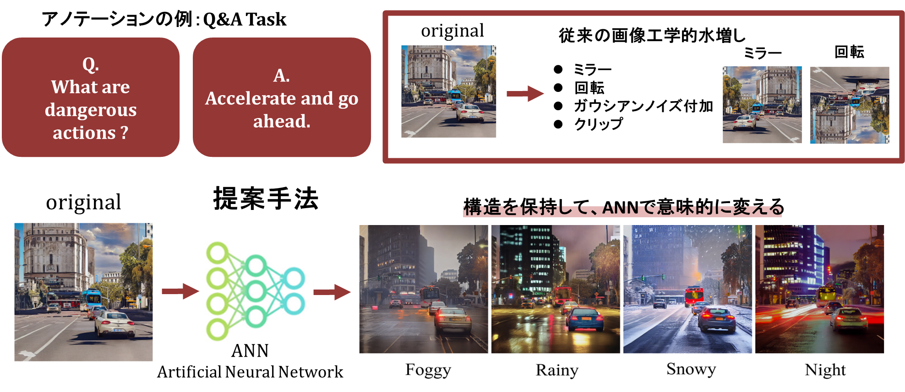
Abstract
High-level autonomous-driving tasks require more than class masks: they depend on road geometry, distant structure, object presence, lane continuity, and traffic-scene coherence. Existing annotation-conditioned diffusion approaches are promising, but semantic-only control is often insufficient and multi-condition control can introduce destructive conflicts. AtteConDA addresses this by combining semantic segmentation, depth, and edge conditions in a Uni-ControlNet-style diffusion framework, while introducing a Patch-wise Adaptation Module (PAM) that performs conflict-aware local condition selection. The repository further organizes the complete practical pipeline — preparation, prompt generation, training, Waymo inference, and evaluation — so that new methods can be compared on a shared structure-preservation benchmark.
Method
The method is built around a reusable generation pipeline, Uni-ControlNet-compatible initialization, and explicit condition-conflict suppression through PAM.
1. Multi-condition generation pipeline
RGB images are converted into semantic segmentation, depth, and edge conditions, while prompts are generated to change appearance without rewriting layout.
2. Uni-ControlNet-compatible initialization
Strong controllable diffusion priors are reused instead of relearning everything from scratch on a smaller autonomous-driving dataset collection.
3. PAM for conflict suppression
PAM selects locally effective conditions so that low-frequency geometry and high-frequency contours do not collapse each other in the shared feature space.
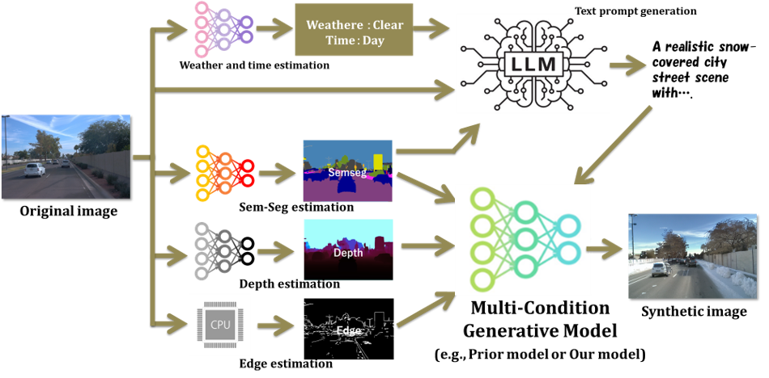
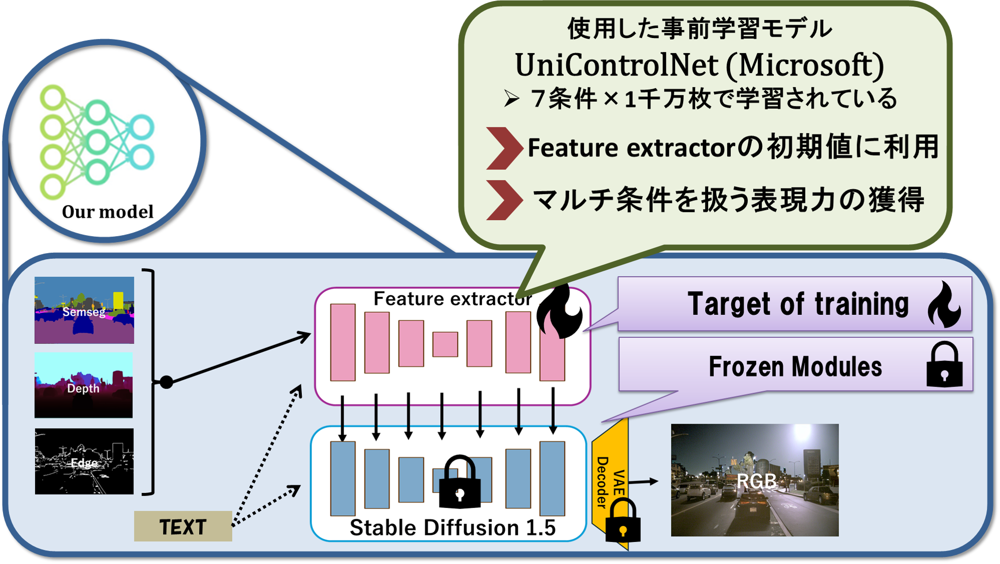
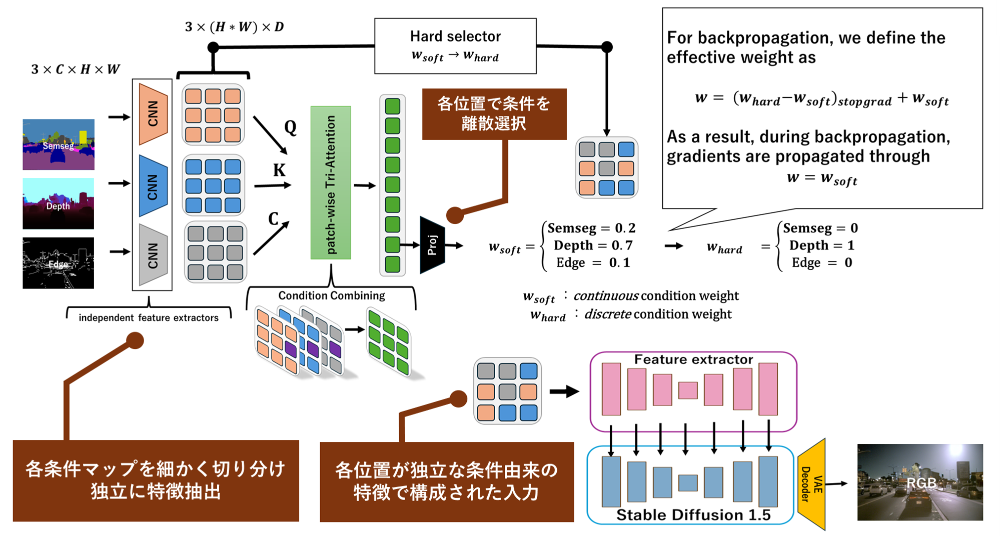
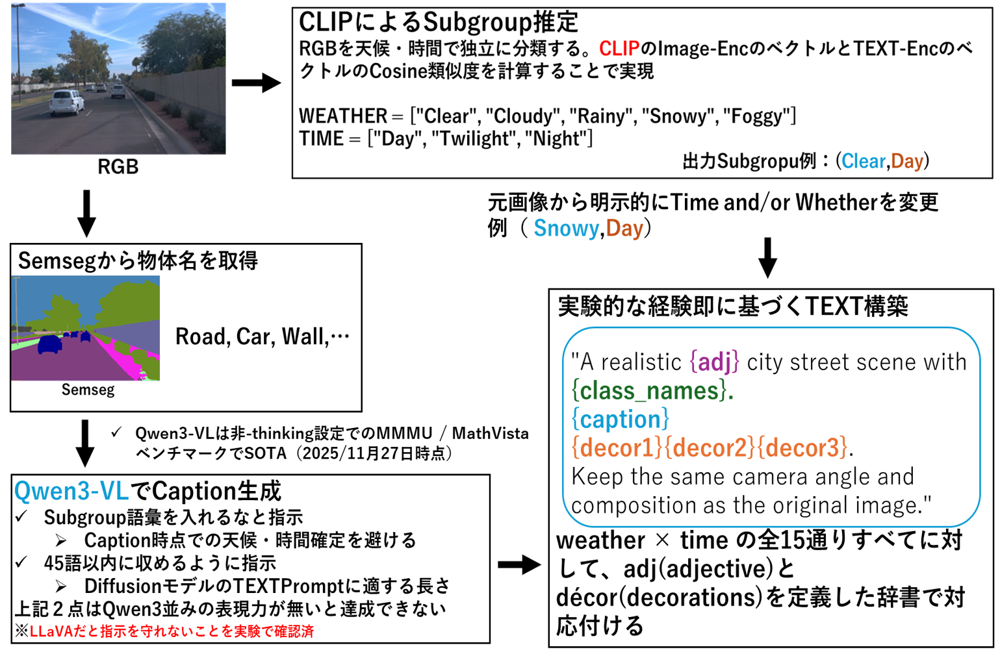
What PAM changes
Results
The project focuses on structure-preserving augmentation for high-level driving tasks, so semantic-only scores are not the whole story. The important question is whether geometry, object presence, contours, and realism are preserved together.
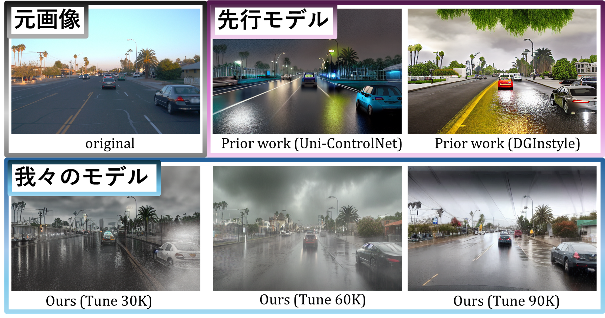
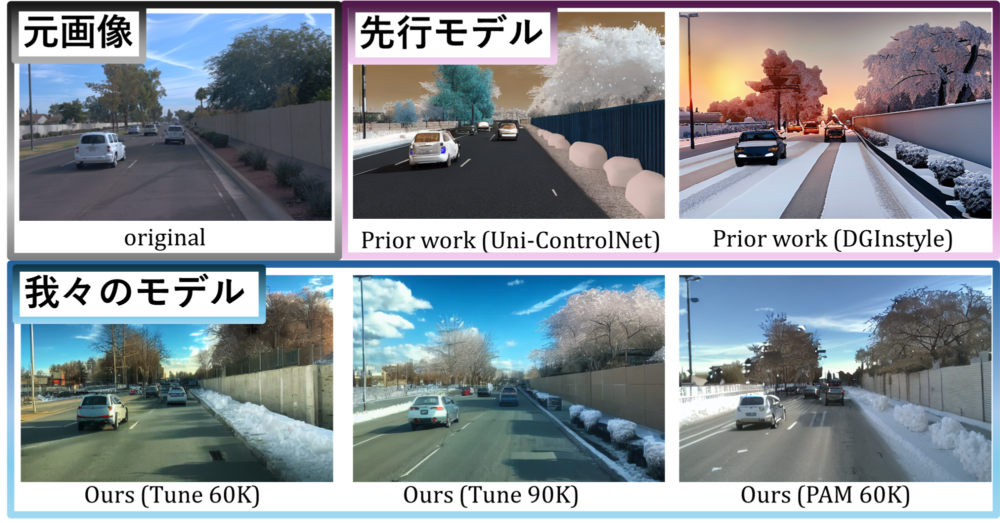
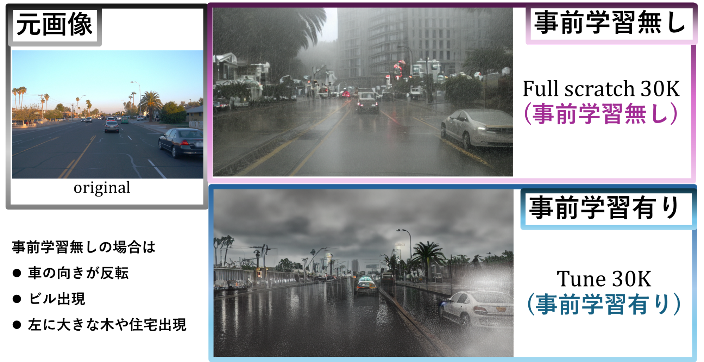
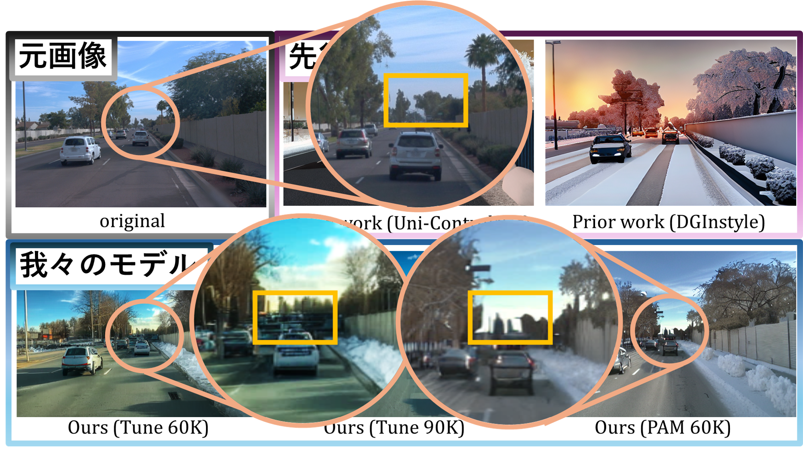
| Category | Metric | PAM60K | Tune60K | DGInStyle | Best among ours |
|---|---|---|---|---|---|
| Semantic Segmentation | mIoU ↑ | 0.3310 | 0.3115 | 0.3722 | 0.3310 |
| Depth | RMSE ↓ | 27.77 | 33.02 | 36.71 | 27.77 |
| Edge | L1 Error ↓ | 0.04493 | 0.04561 | 0.09176 | 0.04493 |
| Object Preservation | F1 ↑ | 0.1071 | 0.0889 | 0.0790 | 0.1071 |
| Reality | CLIP-CMMD ↓ | 0.1794 | 0.1738 | 0.2710 | 0.1738 |
| Diversity | 1-MS-SSIM ↑ | 0.8480 | 0.8497 | 0.9240 | 0.8497 |
| Text Alignment | R-Precision@1 ↑ | 0.3258 | 0.3563 | 0.3606 | 0.3563 |
Interpretation: AtteConDA is strongest when the target is not only semantic layout fidelity but also geometry, contour preservation, object presence, and realism.
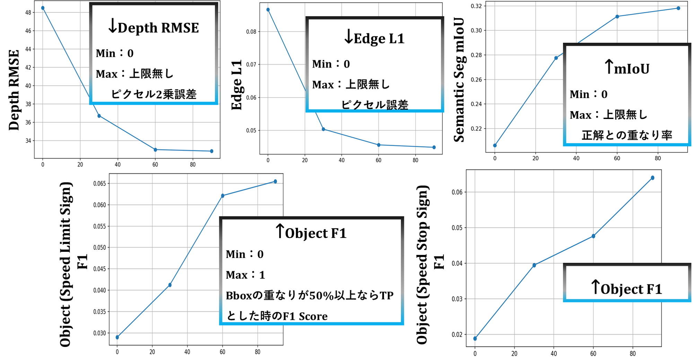
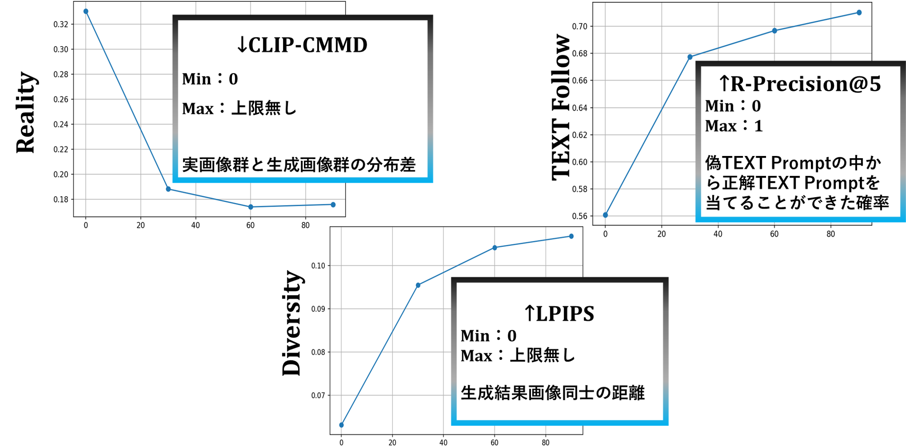
Released models
The Hugging Face collection already groups the released checkpoints. Model-card templates are included in the repository for each public release.
Acknowledgements
Direct upstream codebases
- Uni-ControlNet
- DGInStyle
Runtime models and tools
- Stable Diffusion v1.5 family
- OneFormer
- Metric3D / Metric3Dv2
- Grounding DINO
- CLIP / open_clip
- Qwen3-VL
- LPIPS / AlexNet
- Tesseract OCR
PixelPonder is acknowledged as paper-level inspiration for dynamic multi-condition conflict handling. This release does not claim code provenance from an unlicensed source tree.
Citation
The paper release is planned later. Until then, please cite the software / project release.
@misc{noguchi2026atteconda,
title = {AtteConDA: Attention-Based Conflict Suppression in Multi-Condition Diffusion Models and Synthetic Data Augmentation},
author = {Shogo Noguchi},
year = {2026},
howpublished = {GitHub repository},
note = {Gunma University}
}
Some figure labels and internal filenames are still being translated from the original Japanese thesis draft. The repository keeps them for reproducibility first, then improves the English presentation incrementally.